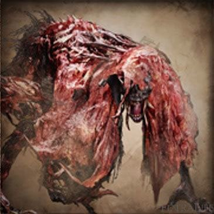

Blood-Starved Beast |
|||
|---|---|---|---|
|

|
|||
| General Info | |||
 |
 |
Location | Drops |
| 3470 | 6600 | Old Yharnam | Pthumeru Chalice |
| 4536 | 3565 | Hintertomb Chalice | Lower Hintertomb Chalice |
| 27258 | 46514 | Ailing Loran Chalice | Ailing Loran Root Chalice |
| Defenses | |||
 |
 |
 |
-- |
| 108 | 108 | 108 | -- |
 |
 |
 |
 |
| 108 | 160 | 55 | 160 |
 |
 |
 |
 |
| 999 | 180 | Yes | No |
Blood-Starved Beast (血に渇いた獣 Chi ni kawaita kemono lit. "Blood-thirsty Beast"), also known as the Thirsty Beast, is an optional boss in Bloodborne. This malformed beast has had all of the skin peeled off its back, making for a truly gruesome sight. Capable of extremely quick and agile attacks, this erratic and unpredictable enemy is a truly formidable foe, whether you choose to face it alone or with other Hunters at your side.
Blood-starved Beast Information
- You can summon Alfred for this fight if you have the Old Hunter Bell and have not defeated Vicar Amelia yet. As you descend towards the chapel on the first staircase his summon sign will be on the right.
- This boss fight is optional, but it is necessary if you wish to do any of the Pthumeru Chalices, Hintertomb Chalices or accessing Hypogean Gaol for befriending Djura.
Locations
- Old Yharnam in a ruined church at the bottom of the area.
- Hintertomb Chalice (Final Boss)
- Ailing Loran Chalice (Layer 2 Boss)
- Hunter's Nightmare (DLC), in a cave with the Gatling Gun hunter
Drops
- Blood Echoes: NG (6,600), NG+ (62,747), NG++ (69,021), NG+3 (78,433), NG+6 and so on (156,866)
- Pthumeru Chalice
- Lower Hintertomb Chalice (when fought in Hintertomb Chalice)
- Ailing Loran Root Chalice (when fought in Ailing Loran Chalice)
- Gain 1 Insight for finding the boss and 3 Insight for killing it.
- Warm Damp (circle) Blood Gem (Ailing Loran Chalice layer 2 Boss)
Combat Information
- Weak to Fire Damage.
- Strong against Arcane and Bolt damage.
- For the fight make sure you have several Antidotes on your quick slot. (If you're out of antidotes, there are 3 in the back of the altar in the boss room)
- In all three stages, the Blood-starved Beast can be parried.
- Blood-starved Beast is classified as a beast so anything that increases damage vs. Beasts will increase damage against it.
- All of the Blood-starved Beast's attacks are focused in front of her and she has no side attacks. Staying to her side/behind will always produce an opening.
- In its second and third phase, the Blood-starved Beast tends to attack in a succession of 5 or 6 swipes. These swipes have bad tracking and the boss will continue attacking in the general direction even if the hunter dodges behind it. Take advantage of this and retaliate while it whiffs.
- The Blood-starved Beast is susceptible to Pungent Blood Cocktail, which will distract it for a short time, leaving it open to attacks.
- Using the Black Church Set is a good idea as it has a good deal of Slow Poison RES.
- The Yharnam Hunter Set and Gascoigne's Set both provide high Slow Poison RES and are available before the Blood Starved Beast.
The Blood-starved Beast has three phases that is signified when it stops and roars:
- Phase I: 100% hp - The boss is slow-moving and has very limited attack combos.
- Phase II: 66% hp - In addition to normal move set, it gains a couple attack combos and will now dodge away after each of its attacks, allowing one or two attacks before it moves. Its hits now build up Slow Poison.
- Phase III: 33% hp - In addition to the previous move set, it gains a couple of attack combos and becomes more aggressive with its attacks. Slow Poison liquid now spouts from the beast's body during its attacks.
Videos
Strategies & Attacks
Strategy 1 (Flamesprayer)
An easy way beat the beast (I've done it with only one Antidote and ~4-5 Blood Vials, level doesn't matter for this method). The requirement for this method is to have a Flamesprayer, which you can acquire from Gilbert after entering the citadel. You will also need 16 Blood Stone Shards (if possible) to upgrade it to +3, increasing the efficiency greatly.
The Blood-starved Beast is very weak to fire in all three stages. Use the Flamesprayer whenever he's in range (you can experiment with the ranges before going to him) to ramp up the multiplier. Whenever you see that he wants to move on to the next stage, rush him and keep spraying. He is immobile in that time which allows you to build up a multiplier (see Flamesprayer page for details). As a result the beast is taking tons of damage, and your job is to simply dodge the three attacks he can do when taking tons of damage (the claw rush, the grab and the claw attack), which are his main 3 attacks anyway. What's more important is that using the sprayer does not consume stamina, and does not force you to be immobile, meaning dodging his fast attacks is less of a problem.
Overall this method is very safe compared to the parry method (which simply involves parrying all of his attacks) and is relatively low on resource use. If you run out of bullets, you can press up on the d-pad to get 5 more (at the price of a bit of health).
Strategy 2 (Alfred Decoy)
Make sure you have some insight so you can summon Alfred. He will aggro the beast most of the time, giving you a chance to stay at the back and try and use charge up attacks. Alfred uses the Kirkhammer and hits very hard, however, his aggression can get him killed so you can't let him tank the beast on his own. He will hold the attention of the beast quite well allowing you to get behind and score some charged up R2 attacks. Time it right and you can even score a Visceral Attack on the beast. Get the beast's attention on you throughout the fight to allow Alfred to heal himself up. Note that Alfred is not available as a summon if you have already defeated Vicar Amelia.
Strategy 3 (Dodge to the left)
If you are playing solo I would highly recommend doing this method. As all of his attacks attack either forward or on HIS left side slightly it is recommended to dodge all of his attacks by rolling/sidestepping to the left (his right) for all of his attacks and if possible getting of a couple of free hits after he attacks. This method will work through all 3 stages of the fight but in his 3rd stage it is recommended to play more cautiously because of the slow poison build up.
Strategy 3.1 (Dodge to the left)
As mentioned in the above strat, dodging to the left works great on this boss. To add to it, for the entire first stage you can hug it's leg (your left) and keep swinging without needing to dodge. The slow claw swipe will miss every time. You only need to dodge (I recommend quickstep vs rolling) when he rears up for the big combo. This will still mostly work for the later stages, but you will have to dodge more often. You can however get a few quick hits during or after pretty much every combo it does.
If you are on an Arcane build remember you can parry with the Augur of Ebrietas for some nice damage. I found that I actually did more damage if you follow the parry with two attacks from Ludwig's Ultra Greatsword form rather than doing a visceral.
Strategy 4 (Parry And Visceral Attack)
The Blood Starved Beast is extremely vulnerable to parrying. Shooting him when he raises up his claw during singular swipe, or before the last slash if its rapid slashes will immediately stagger him, leaving him to be riposted by visceral attacks continuously, it barely takes roughly 6-7 Visceral attacks to defeat this beast effortlessly.
Strategy 5 (Ailing Loran Chalice)
This fight can be quite a challenge so I will cover several methods and do remember it is not like the first encounter, for starters he has a lot more health, I went in with a 10+ Ludwig's Holy blade and was only doing around 500 damage in greatsword mode and in the grand scheme of things that is very little damage. One of ways you can beat him while parrying however I suggest things like the Formless Odeon rune which increases maximum bullets along with Odeon Writhe which restores bullets with each visceral attack. In this method you are going to want to be very precise and you should also use the blood bullets. Melee Method- For this you will need some sort of buff Fire paper works best but i used arcane, you will also need a high damage weapon that has long reach or quick slashes. You will need to learn his attacks so you can dodge them effectively (Use chart above) but during his final stage try some parries because they have the potential to do some really good damage.
Strategy 6 (Hintertomb Chalice)
As we all know, the Blood-Starved Beast tends to be a troublesome and tense, yet annoying boss.
However, due to the round arena, the fight can get pretty trivial.
Equip the following:
Treaded Cane +9, 10 Molotov Cocktails and 10 Firepapers.
At the beginning of the fight, lock on onto the Beast and circle the room, facing the creature. It shouldn't attack you.
First of, you throw your 10 Molotov Cocktails at it, all while keeping distance.
After you spend your Cocktails, switch to the second weapon mode of the Threaded Cane, don't forget to imbue it with fire.
Now its just up to you and your reflexes. Try to work with the corners of the room, it may get stuck in there for a few seconds, which can lead to some good hits. Just remember: The more its health depletes, the more aggressive and faster it gets!
| Attack Name | Attack Description & Counter |
|---|---|
| Claw Swipe | Swipes hand across body. Be wary of charging in after the first swipe, as additional attacks may follow if the player remains close. Can be parried. |
| Lunging Swipe | Lunges forward while swiping claws. Be wary of its' speed and the distance it covers. Avoid this attack by dodging to the side. Can't be parried. |
| Lunging Grab | The beast lunges at and grabs the player before biting them. Inflicts Slow Poison. Before executing this attack, the Blood-Starved Beast will momentarily pause. When this happens, prepare to dodge. |
| Rapid Slashes | Extended string of rapid slashing attacks. Each successive slash carries the creature forward. Avoid this attack by dodging to the side. Can be parried. |
| Poison Explosion | After rearing back a cloud of poison shoots out of the beasts' body. A high damage attack with a moderate area of effect. May inflict Slow Poison. Although a risky proposition, opportunistic hunters can get in some free hits while the creature prepares for this attack. |
Notes & Trivia
- In the church after Djura in Old Yharnam, there is a crucified Blood-Starved Beast hanging in the center of the room.
- The Beast Patients beneath this corpse have formed a circle around her and they are chanting.
- On the altar several gold embossments depict The Moon Presence. It is of course concealed and you'll have to look closely.
- The limbs of Blood-starved Beast very much resemble the tails of The Moon Presence.
- When she perform her "poison explosion" she can mimic the form of Manus' horns with her flaps.
- In the encounter in Old Yharnam, it is possible for the Blood-Starved Beast to become stuck in the wall above the alcove behind the altar. If hit with a high-reaching weapon (tested with the Hunter Axe), the Beast can be defeated by effectively forcing it underneath the world.
 Anonymous
AnonymousThis trick worked for me in phase 3: always be creating distance between you two, being staying to close racks up poison and getting that in phase 3 is a death sentence, after attacking get as far away as you can without using all your stamina so BSB can’t clip you. Repeat until win
- Anonymous
After some tries I'm out of fire paper. How can I get more ? Knowing that I can only buy more after getting Radiant Sword Hunter Badge in Healing Church Workshop that I would be able to reach after beating this f##### beast...
- Anonymous
In a way the BSB is actually really cleverly designed. It’s a hint as to how bad the chalice dungeons are
- Anonymous
If you're having trouble, pay close attention to what he's doing and learn his tells/moves. Don't mash attacks, dodge sideways instead of backwards to avoid grabs and wombo combos. The poison is only an issue if you're playing too passively.
- Anonymous
Just killed the one in Loran and it dropped me a Blood Chunk [ thank you, Midoriko + great Wixoss taste ]
- Anonymous
Just killed the Ailling Loran one, what a great fight, quite difficult, but one of my favourites in the whole game.
- Anonymous
I found that by approaching BSB dodging towards the boss and to the right (his left) as he was about to begin each attack I was able to kill him without even getting hit or poisoned once. As long as you aren't greedy and wait to attack until he is within range after the dodge because at least half the time he will be too far away.
- Anonymous
Here' some useless Data about the BSB in the hunters nightmare. The gem it drops is actually random. It seems to be always a (5) gem but the second Attribute is different. Not by much but still some weird interesting Insight.
- Anonymous
The last phase of this fight is more of a do or die type of phase than anything else. Either you punish his aggression with visceral attacks or he grabs you once and you die from the poison immediately after it's over (unless you have really high vitality in which case pray you can get a chance to use an antidote afterwards). There really is no middle ground to speak of here.
- Anonymous
I just defeated the first one, I'm still at the beginning of the game and it took me about 5 or 6 tries, without summon. I believe the beast is immune to fire damage unless you burn the crucified beast. When I fought it neither the flamesprayer nor the molotov cocktails worked against it. I just realized it after I defeated the beast and I helped another player.
- Anonymous
actually pretty scary with low poison res where one swipe from him pretty much is death
- Anonymous
I spent like three hours trying to fight this boss, only to come here and find out it was optional.
- Anonymous
RIP bsb in the dlc. I pulled him up to were the Gatling gun hunter was originally. He took one swipe and fell through the map.. took a minute but the blood echo appeared for him. Exited game to get his drop to spawn.
- Anonymous
- Anonymous
- Anonymous
this was by far the easiest enemy in the game, not even boss. If you apply fire paper to a serrated weapon and use pungent blood cocktail in a corner, it's unlikely that you'll ever face any amount of resistance whatsoever before it's dead
- Anonymous
The last real obstacle for building a character, since you get access to the chalices afterwards. From there, it's two mediocre "boss" fights before you have access to infinite passive Echo income (cum dungeon), and with the right glyphs, you can farm top tier gems, runes, and upgrade materials with no real cost (aside from your internet bill).
Not gonna lie, though, BSB puts up one hell of a fight, and makes you work for it. It's the boss that separates the wheat from the chaff, and the wheat FLOURISHES once it's over.
- Anonymous
Super underrated fight. It crescendos really well as it progresses.
- Anonymous
- Anonymous
As long as I watched out for the poison, this boss was a wall to me, best thing to do is ignore poison, dofge to the left and use all the fire u can.
- Anonymous
really enjoyed this boss, took me 3 or 4 tries, only real bs is the grab attack but it really only hits u if u get greedy or are just careless. Very well designed, the level leading up to this boss though was pretty shitty in my opinion
- Anonymous
This boss sucks beast ass, holy ****. First, "slow" poisoning, second, the bullshit grab, third, he poisons you in one ****ing hit, and fourth, how the hell does he swinging his meat flaps hurts the player so much? Worst boss in the main game, even Mikolash and Celestial Emessery are better, **** BSB
- Anonymous
For a beginning third boss it’s ****ing difficult with low Vit (which is obviously a given with any boss but) slow poison, if that was removed this boss would’ve been absolutely fine, it wouldn’t make it easy and a good challenge to overcome but the poison and the grab is a little too ****ing much From Soft jeez
- Anonymous
it looks like the boy version of the dancer from darksouls 3 just more rotten and covered in blood
- Anonymous
- Anonymous
- Anonymous
On my most recent playthrough, I beat BSB without actually “killing” it. The poison-spewing fool clipped through a wall and fell out of the world!
- Anonymous
- Anonymous
Anyone else get the loran version stuck doing its final phase opening scream?
- Anonymous
though I've already killed him in loran a billion times, I'm having massive trouble with my level 80 character (30 vit, skill, and str). Am I underleveled or do I just suck
- Anonymous
BSB has always been a huge wall for me.
I'll parry a few times, but once poison phase starts I'll back off and start trying to juggle antidotes, pungent cocktails and fire paper while trying to dodge and heal and I'll short-circuit and lose it and die.
This time, I equipped the best poison-resistant clothes I had, and just fought it face to face. Parried all 3 phases. Healed if neccessary, but ignored inventory. Put it down in 7 viscerals.
- Anonymous
Go alone, Equip a saw weapon, learn to parry, do visceral 5x and maybe one Molotov when beast is applying it’s poison aura. If poisoned try to get the beast to attack a pillar because it will give you time to cure poison and heal. I tried this fight like 10x with Alfred and it was impossible, my viscerals did like no damage. Did it alone on the second try.
- Anonymous
This thing is so awesome. I play bloodborne for over two years now and when fighting this thing in the Loran Chalices it grabbed me in its 3rd stage and freckin one shot me with 50 Vit. Slow poison combined with its grab is the worst thing that could happen to you. Sexy oll skin flaps deserves an award.
- Anonymous
- Anonymous
Is even possible to reach this thing without passing in front of Djuria? I mean you can pass trough the prison but the snatchers will appear only after this boss Is dead... That doesn't make any sense to me. Anyone knows how to get ti this thing without snatchers around?
i love this boss (specifically the one in ailing loran) because it forced me to finally learn how to parry. when i tell you i avoided learning to parry until this boss forced me to, i dont just mean the whole game until this point, i mean a full playthrough and a half of bloodborne and multiple of dark souls 1 and 2..... not gonna lie i still tend not to parry in dark souls (since i usually dual wield and rarely use shields) but once i started the parrying life in bloodborne i can't imagine going back.
- Anonymous
this is the only boss that consistently makes me want to rip my hair out after ten playthroughs
- Anonymous
Omg this boss was sooooo easy. Jk, **** this boss. I refuse to cheese and I don’t play co-op (because I’m cheap and won’t pay for PS network). I had to have fight this boss 20+ times. I got to 3rd stage almost each time, but then I’d make one dodge mistake and *boom* dead. BSB was the reason why I quit the game the first time. After playing the Dark Souls games, it’s more tolerable. Btw, whose idea was it to put easy bosses like Cleric Demon and Vicar Amelia in the beginning, but have G Daddy and Period Flaps as the ****ing bosses inbetween? Then the Witch after I got my ass handed to me with other bosses? Da Fuq? *cue Souls addicts to yell at me for clearly not being very good while they fap to their superior gaming abilities*
- Anonymous
my first time playing, i used up all my vials and antidotes so right as i killed her, i died of poisoning lol. thank god it counted
- Anonymous
Does he drop the chalice in NG+? Because I skipped him in the first run, then killed him in NG+ and he didn’t drop it.
- Anonymous
First time playing Bloodborne here! Sick game so far. This boss gets hard in its final phase but he won’t have many HP left by then. Just roll right after his swings and you won’t get hit. Bring antidotes though you’re guaranteed to be poisoned.
- Anonymous
- Anonymous
I freaking hate this boss in chalice dungeons. Parried it 6 times in a row, *****ed up ONCE and it poisoned me and one shorted on 50 vitality. Nice.
- Anonymous
Does it have a cloak over its head... Or is that skin? I'm very confused
- Anonymous
- Anonymous
For the Ailing Loran boss I found the strategy for all phases, dodging to the left and hitting a few times and retreat to be the easiest, unless you are parry master. Wear high physical and poison protective gear and protective runes. I used a +10 Beasthunter Saif with fire gems. Don't worry to much about healing poison in the last phase, as it will be reapplied almost instantly. Instead focus on staying aggressive to finish the boss as fast as possible, while healing in between. Don't let you health get to low as the boss can unleash a combo with several fast hits, that could kill you if you're not at >1000 HP.
- Anonymous
when it jumps back or if there's just a huge gap between you and the beast in general, dodge into it as fast as you can. You are usually vulnerable to it's leaping grab attack when you are far away, but if you fast enough you just might be able to stagger it with the bullets, but it's quite risky
- Anonymous
I recommend being extremely aggressive against Blood-Starved Beast, especially in Old Yharnam. If possible, never dodge back and always to the side.
- Anonymous
Wow this boss was very easy i just used fire paper and pungent blood cocktails and kept it in a corner and bam easy w
- Anonymous
- Anonymous
So, I just fought the Blood-Starved Beast in the Lorian chalice dungeon, and I noticed something strange. When it was approximately below 20% health, it seems like a forth phase started, because it screamed more, and my slow poisoning gauge was rising even when I was not that close to it.
- Anonymous
"Note that Alfred is not available as a summon if you have already defeated Vicar Amelia" this is false
- Anonymous
Parrying will kill this boss fast, but it's not always reliable as the flaps of skin are really good at covering up its moves
- Anonymous
REALLY Just DODGE TO THE LEFT. Keep in front of It, always walking left, If it does anything, dodge to the left. This makes the boss from hard to stupid easy.
- Anonymous
It literally looks like a used menstrual pad that has arms and legs. Plus it is indicated that it is a female. God damn it from soft how do you get these ideas
- Anonymous
- Anonymous
Late to the game, but jist went against this dillhole on the lost Loran lvl 2. Kudos to the cats for the circle left strategy. Maybe used three potions tops and no antidotes, just keep circling left and or dodge left on his swing then wail away. With a lvl 9 hunternaxe (2h form), lvl 102 with 42 into vit and 50 into str. 26 endurance. Circle left made this fight cale, way easier than the other two times.
- Anonymous
- Anonymous
- Anonymous
Once this guy went into his second phase, I threw a pungent blood cocktail at him and he just stood there screaming. I threw like 6 molitavs at him until he died. It turned into a cheese but whatever. I was shocked he didn't move the whole rest of the fight, but I'm not complaining.
- Anonymous
Slow poison resis +200 rune and dodging left always = these two strat help me whooped his ass easily in Chalice (with 400+ slow poison resis I didn't even have to use antidote lol)
- Anonymous
- Anonymous
The one that sits inside the cave with the obnoxious gatling gun hunter will aggro everything except beast patients. You can lure him out and he will kill almost all the enemies in the area. Mine made it all the way to the rifle wielding hunters on the bridge before they killed him.
The chalice dungeon is a bit of a different fight, learn the attacks and play it safe because he will bend you over in a heartbeat. Viscerals make it much easier.
- Anonymous
"You can summon Alfred for this fight if you have the Old Hunter Bell and have not defeated Vicar Amelia yet." Hey genius, this should be on amelia's page.... since most people tend to fight her first...
- Anonymous
What if blood starved beast is the wolf from the Grimm Brothers' fairytale? He ate the Redhood and took her clothes just like he did with the granny...
'No Effort' Strat ─ Requirement: Pungent Blood Cocktail, Beast Blood Pellet, Fire Paper, and Saw Cleaver (or any weapon). [First encounter with boss] When entering the boss room, go right immediately, at the fourth pillar, use Beast Blood Pellet and Fire Paper, throw Pungent Blood Cocktail into the corner, abuse transformation attack, and it should be done with 2 or 3 Pungent Blood Cocktail. But if it's your second encounter, use Beast Blood Pellet and Fire Paper before entering the fog wall.
Theory : Do I am the only one who think that the red hood that wear both Slave Knight Gaël and the Blood-Starved Beast may be a proof that both are on the same world ??? And Gael is starving for the Dark Soul while the BSB is starving for blood (and Gael mention the "Old Blood" during his transformation) Plus they have like the same attitude, with being on their hands and knees even if we see that they have hands and feet like human, and being very agressive
- Anonymous
- Anonymous
For the old yharnam fight , you just need to hit it with a long form weapon like rifle spear - for the first part of the fight and then dodge when it goes mad . And then head behind the altar when it gets more aggressive. This effectively traps him in a small area. After it follows just throw pungent blood cocktails at whichever way it comes round and then lay into it when it’s back is turned jump back when it turns and repeat , I did it without needing to use antidote , fire paper and only one blood vial and I’m no wonder gamer it really is that easy .
- Anonymous
In the ailing loran chalice I'm finding chikage with high rapid poison to be very effective. As long as you can dodge his grab 5 to 6 hits will trigger the build up
- Anonymous
Sides are safe my ass, I keep getting grabbed when I dodge past her, *****ing hell she triggers me I only need some good gems, but this ***** just stops me from having fun, 450 per hit and 27k hp q.q
- Anonymous
I think this boss is a transformed chappel dweller. I mean, just compare him to the chappel dweller. They look awfully similar.
- Anonymous
Died a few times so decided tonight was the night, got new poison resist gear, summoned Alfred and put some fire paper on my axe. Made sure I had antidote to spare and even leveled up arcane so I could use the flame thrower. After everything was set I ran in dodged and hit the bugger. Tried to get lock but couldn’t spun around... couldn’t see him at all. Began to hunt... no sign of the beast. After five seconds I got the boss defeated message, so after all that he glitched out and died, robbing me of my first victory over him in my first ever play through. Kind of anticlimactic
- Anonymous
Beat it on the first try. Dodge, attack, few Molotovs, a fire paper in the last stage just to finish it off quickly
- Anonymous
- Anonymous
- Anonymous
- Anonymous
Super easy fight if you simply maintain left dodge and strafe the entire battle. Throw an oil urn and a few molotovs at the outset (as he approaches) to take its health down by nearly a third before even striking a single blow.
- Anonymous
Poison is your enemy - https://www.youtube.com/watch?v=lR6z5bkUHUo
- Anonymous
- Anonymous
DODGE LEFT!!!! I beat it my first try on NG+ doing so
The lad cannot even hit you
- Anonymous
Try use your gun, when she is about to finsh her strike. Shoot her, it will cause a parry.
That's the boss main weakness.
- Anonymous
I am still stuck on this boss. what gets me is the poisoning.
- Anonymous
So the ashen blood sickness was said to have "triggered" the beast plague, but I realized that doesn't necessarily mean the ashen blood IS the plague. In fact, it's apparent that the plague isn't the result of a bloodborne pathogen, but rather the form of a beast is a result of fear.
Think of it this way: the Healing Church was obsessed with perfecting their blood, but an outbreak of plague in Old Yharnam threatened their endeavor, and thus they deployed the hunters (likely led by Ludwig and/or Gehrman) to slaughter the infected. The hunters viewed the infected as poisonous beasts, and through this dehumanization, they found it easier to stomach slaughtering the innocent civilians. However, unbeknownst to the hunters, the Healing Church sealed the bridge to the Cathedral Ward, dooming the hunters to infection.
Simultaneously, hunters like Ludwig who became obsessed with the hunt were also perceived as beasts, considering how uncontrollable and violent they had become. Eventually, hunters lose sight of themselves and overflow with the thirst for blood, attacking anyone and anything. This deluge of beasts drove the more sane hunters to set Old Yharnam alight, though this desperation could never erase the flood of horror that drowned the city, and thus the beasts of Old Yharnam, or at least their memory, survive to this day.
I feel like the blood-starved beast represents both of these fears: for one, it's quite clearly infected with this "ashen blood," and the title "blood-starved" seems to hint that this beast is brimming with bloodlust. I'd even wager this beast could be one of the hunters sent to cleanse the ashen sickness, now infected and desperate for blood. Furthermore, the fact that it guards one of the chalices might hint that this creature was connected to the Healing Church in some way, prior to its "transformation." It could also have been a minister of sorts, with the Church of the Good Chalice acting as a center of communion for the citizens of Old Yharnam, until the ashen blood took the city by storm.
- Anonymous
- Anonymous
Is it just me or does the blood starved beast remind me of the guy in oden chaple
- Anonymous
I try not to read these descriptions before I face any boss because it's my first play through. The one thing I'm liking about this game is that the strategies are pretty close to what I'm trying to do, but I just got to "get good". It really doesn't take away from the fight, I just got to be stubborn and keep trying. Great game.
- Anonymous
get up in his grill and parry with blunderbuss to visceral. repeat until victory
- Anonymous
he has a 4th stage at like 10 percent health i dunno how i got it but i was trying to cure poison and he screamed like he was changing stages then started fuqing lunging at me i killed him before he could use this stage to much but i don't see anything about this on any wiki
- Anonymous
Any serrated weapon + cursed fire blood gems = PREY FRIGGIN' SLAUGHTERED
- Anonymous
If you see ger doing the single claw swipe, dodge to the left and immediately start up a charge attack to her back. With the Threaded Cane, I knocked her to the ground every time. I'm not sure if you can do it with other weapons though.
- Anonymous
Here's a good strategy keep hitting this guy until you see home move his hand to attack keep doing that and he's super easy oh and once he reaches his final form just hit him and when the poison bar fills half way just back off
- Anonymous
It's worth noting that one cannot access any Loran chalices without defeating this thing as well, seeing as the only place one can get Ritual Blood 4 is in the Lower Hintertomb or Lower Pthumeru chalices.


{kind=link}
Its health in the Loran dungeon is just absurd.... it doesn't really make sense compared to the layer 2 ennemies we faced before it.
It's makes for a really long fight, and in its 3rd phase, 1 mistake == dead ! It's very frustrating !
0
+10
-1